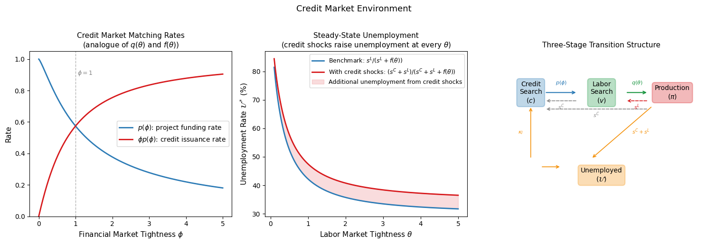
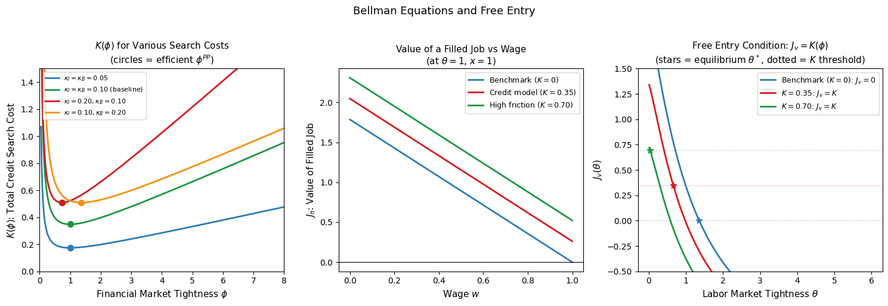
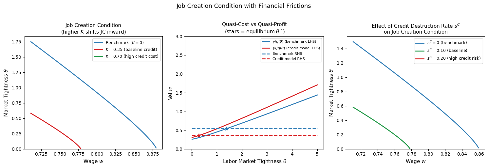
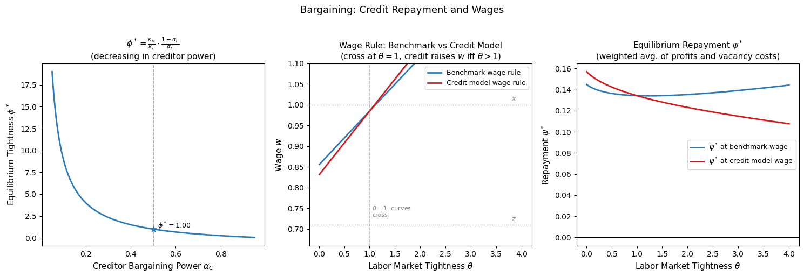

Frictional Credit Market#
Frictions in the Credit Market#
Introduction#
The global financial crisis of 2008 demonstrated forcefully that disruptions originating in credit markets can have profound and persistent consequences for the real economy. In the years following the crisis, unemployment rose sharply, investment collapsed, and recovery was slow — patterns that standard macroeconomic models without financial frictions struggled to account for. A central challenge for modern macroeconomics is to build models in which credit market conditions affect real activity in a quantitatively significant way.
The previous notebooks on financial frictions — the pure credit economy, the CSV framework of Bernanke-Gertler and Carlstrom-Fuerst, and the collateral constraints of Kiyotaki-Moore — each introduced financial frictions through a different mechanism: limited commitment, asymmetric information, and limited enforcement respectively. This notebook introduces financial frictions through a fourth mechanism: search frictions in the credit market, modeled in the same way that search frictions in the labor market generate unemployment.
The key insight is that finding a creditor is not instantaneous or costless, just as finding a worker is not instantaneous or costless. Entrepreneurs with viable investment projects must search for creditors willing to finance them; creditors must search for creditworthy projects. This bilateral search process generates matching frictions in the credit market — a financial counterpart to the labor market frictions at the heart of the Diamond-Mortensen-Pissarides framework. Integrating these two search processes produces a model in which financial conditions and labor market outcomes are jointly determined and mutually reinforcing.
Why Search Frictions in the Credit Market?#
The search-based approach to financial frictions has several attractive features relative to the CSV and collateral constraint approaches:
Empirical realism. Many credit relationships — particularly in corporate lending, venture capital, and interbank markets — are characterized by bilateral search and negotiation rather than anonymous market clearing. Firms do not borrow from a Walrasian credit market at a posted rate; they negotiate with specific lenders over terms that reflect their individual circumstances. The search-and-bargaining framework captures this structure directly.
Tractability. The search framework generates financial frictions through a mechanism that is formally identical to labor market frictions, allowing the tools developed for the labor market — matching functions, Bellman equations, Nash bargaining, free entry — to be applied directly to the credit market. The resulting model is analytically tractable and produces clean closed-form expressions for the key equilibrium objects.
Financial multiplier. The central result of this framework is a financial multiplier: credit market frictions amplify the response of labor market tightness — and therefore unemployment — to productivity shocks. The mechanism is intuitive: tighter credit conditions raise the effective cost of job creation, reducing vacancy posting and increasing unemployment for any given level of productivity. When productivity falls, the combination of lower profits and higher financial costs generates a larger contraction in job creation than the benchmark model predicts.
Financial shocks as independent drivers. By modeling credit market conditions as an endogenous outcome of search activity, the framework allows financial shocks — changes in the cost or availability of credit — to act as independent sources of business cycle fluctuations, distinct from the productivity shocks that drive the standard RBC model. Empirically, credit spreads widen and credit availability falls in recessions; this framework provides a structural interpretation of these patterns.
Connection to Previous Lectures#
This lecture builds directly on the benchmark search and matching model of the labor market developed earlier. Readers should be familiar with:
The labor market matching function, market tightness \(\theta\), and the vacancy-filling and job-finding rates \(q(\theta)\) and \(f(\theta)\).
The Bellman equations for firms (filled jobs and vacancies) and workers (employed and unemployed).
The Nash bargaining solution and the equilibrium wage rule.
The job creation condition and the steady-state equilibrium in \((\theta, w)\) space.
The credit market model introduces a new stage — credit search — that precedes the labor market stage. Firms must first secure financing before they can post vacancies, and the cost and difficulty of obtaining that financing directly affects the job creation condition. The benchmark labor market model emerges as a special case when credit market frictions vanish.
Roadmap#
The lecture proceeds as follows. We first specify the environment — the agents, the timing across three stages, and the credit market matching technology. We then derive the Bellman equations for entrepreneurs, creditors, and the joint firm entity, and establish the free entry conditions that pin down the financial market equilibrium. The job creation condition with financial frictions is derived and compared to the benchmark. Two bargaining problems are solved: Nash bargaining over the credit repayment, which determines financial market tightness, and block bargaining over wages, which determines the wage rule. The steady-state equilibrium is characterized and the existence condition identified. We close with the financial multiplier result and a quantitative analysis of how credit market frictions amplify the response of the labor market to both productivity shocks and financial shocks.
Environment#
Agents and Motivation for Credit#
The economy is populated by two types of agents operating in continuous time:
Entrepreneurs (mass \(\mathcal{N}\)): each has a business project that requires external financing before it can begin hiring workers and producing output. Entrepreneurs are cashless — they cannot self-finance the costs of posting a job vacancy — and must therefore locate a creditor before entering the labor market.
Creditors (mass \(\mathcal{B}\)): each has funds available to finance an investment project. Creditors pay the vacancy posting cost \(\gamma\) on behalf of the entrepreneur while the firm searches for a worker, and are repaid once production begins.
Both types of agent discount the future at rate \(r\).
The need for external finance is the fundamental departure from the benchmark labor market model. In that model, firms could freely post vacancies at flow cost \(\gamma\), funded from their own resources. Here, firms are cashless: the vacancy posting cost must be financed by a creditor, and finding that creditor takes time and resources. This single modification — making the credit market subject to the same search frictions as the labor market — generates the financial multiplier.
Three Stages of Activity#
The model distinguishes three stages through which a creditor-entrepreneur pair passes before and during production. Understanding these stages — and the transitions between them — is essential for interpreting the Bellman equations and the flow equations.
Stage 1: Credit search (\(c\)). An entrepreneur without a creditor searches the credit market, incurring a flow cost \(\kappa_I > 0\) (the disutility of effort to locate a creditor). A creditor without a matched project also searches, incurring a flow evaluation cost \(\kappa_B > 0\). When a match is formed, the pair moves to Stage 2.
Stage 2: Labor search (\(v\)). The matched creditor-entrepreneur pair searches for a worker. The creditor pays the vacancy posting cost \(\gamma\) while the firm searches. When a worker is found, the pair moves to Stage 3. Credit destruction — an exogenous shock at rate \(s^C\) — returns both the entrepreneur and creditor to Stage 1 and the worker to unemployment.
Stage 3: Production (\(\pi\)). The creditor-entrepreneur-worker triple produces output \(x\). The entrepreneur pays wage \(w\) to the worker and flow repayment \(\psi\) to the creditor. Two types of destructive shocks can occur:
A labor shock at rate \(s^L\): the worker separates and returns to unemployment; the firm reverts to Stage 2 (vacancy search) while retaining the creditor.
A credit shock at rate \(s^C\): the credit relationship is destroyed; both the entrepreneur and worker separate, returning to Stage 1 and unemployment respectively.
This three-stage structure captures a realistic feature of firm financing: credit relationships are formed before hiring begins and may be destroyed independently of the labor relationship. A firm that loses its credit line must not only stop hiring but also lay off its current workers — a mechanism that links credit market disruptions directly to unemployment.
The following notation tracks the masses of agents at each stage:
where \(\mathcal{U}\) is the unemployment rate, \(\mathcal{V}\) is the vacancy rate, and the equality between entrepreneur and creditor masses at each stage reflects the one-to-one matching between projects and creditors.
The Credit Market Matching Function#
Trade in the credit market is subject to frictions for the same reasons as the labor market: heterogeneity between projects and creditors, informational imperfections, and the costs of evaluating potential matches. We model the flow of new credit matches using a matching function:
with the same properties as the labor market matching function — increasing in both arguments, concave, and constant returns to scale.
Define financial market tightness as:
the ratio of searching entrepreneurs to searching creditors. By analogy with labor market tightness \(\theta = \mathcal{V}/\mathcal{U}\), financial market tightness \(\phi\) measures conditions in the credit market from the perspective of entrepreneurs: a high \(\phi\) means many projects competing for few creditors.
Using constant returns to scale, the matching rates on each side of the credit market are:
Project funding rate — the rate at which an entrepreneur finds a creditor:
A tighter credit market (higher \(\phi\)) means entrepreneurs wait longer for funding — the project funding rate falls with \(\phi\).
Credit issuance rate — the rate at which a creditor finds a project:
A tighter credit market makes it easier for creditors to find projects — the credit issuance rate rises with \(\phi\).
This is the exact analogue of the labor market: just as \(q(\theta)\) falls and \(f(\theta) = \theta q(\theta)\) rises with \(\theta\), so too \(p(\phi)\) falls and \(\phi p(\phi)\) rises with \(\phi\). The credit market has the same congestion structure as the labor market, with entrepreneurs playing the role of workers and creditors playing the role of firms.
Congestion Externalities in the Credit Market#
Just as in the labor market, the credit market exhibits congestion externalities:
When an additional entrepreneur enters the credit market (raising \(\phi\)), it becomes harder for all other entrepreneurs to find creditors — a negative externality on entrepreneurs. At the same time, creditors find it easier to locate projects — a positive externality on creditors.
Symmetrically, when an additional creditor enters (lowering \(\phi\)), it becomes easier for entrepreneurs but harder for other creditors.
These externalities mean that the decentralized equilibrium in the credit market is generically inefficient — exactly as in the labor market. The efficient allocation requires a Hosios condition in the credit market, \(\alpha_C = \eta_C(\phi)\), where \(\eta_C\) is the elasticity of the credit matching function with respect to the number of entrepreneurs. This was established in the efficiency notebook, and we connect back to it when discussing the properties of the equilibrium.
Destructive Shocks#
The model features two types of exogenous destructive shocks, both modeled as Poisson arrival processes:
Credit destruction at rate \(s^C\): destroys the credit relationship. Occurs in both the labor search stage (Stage 2) and the production stage (Stage 3). When it occurs in Stage 3, both the labor and credit relationships are destroyed simultaneously — the worker becomes unemployed and the entrepreneur returns to credit search.
Labor destruction at rate \(s^L\): destroys only the labor relationship. Occurs only in the production stage (Stage 3). The worker becomes unemployed but the firm retains its creditor and returns to Stage 2.
The total separation rate from production is therefore \(s^C + s^L\): a match in production is destroyed either by a credit shock or a labor shock. Note that \(s^C\) plays the role of a financial shock — increases in \(s^C\) directly raise job destruction and reduce job creation, linking credit market conditions to unemployment dynamics.
Flow Equations#
The evolution of the masses of agents at each stage is governed by four flow equations. At the steady state (\(\dot{\mathcal{B}}_v = \dot{\mathcal{V}} = \dot{\mathcal{N}}_\pi = \dot{\mathcal{U}} = 0\)) these simplify considerably, but out of steady state they describe the full dynamics of the model:
Interpreting the Flow Equations
Equation (3): the stock of creditors in the labor search stage changes due to three flows. New creditor-entrepreneur matches arrive at rate \(\phi p(\phi)\mathcal{B}_c\) (inflow from credit search). Labor shocks move creditors back from production at rate \(s^L\mathcal{B}_\pi\) (inflow from production). Jobs are either filled at rate \(q(\theta)\mathcal{V}\) (outflow to production) or credit is destroyed at rate \(s^C\mathcal{V}\) (outflow back to credit search).
Equation (4): identical structure for entrepreneurs, reflecting the one-to-one correspondence between entrepreneur and creditor masses.
Equation (5): production matches are created when vacancies are filled at rate \(q(\theta)\mathcal{V}\) and destroyed by either type of shock at rate \((s^C + s^L)\mathcal{N}_\pi\).
Equation (6): unemployment rises when production matches are destroyed (at rate \(s^C + s^L\) — both credit and labor shocks send workers back to unemployment) and falls when unemployed workers find jobs at rate \(f(\theta)\mathcal{U}\).
Steady-State Unemployment#
Setting \(\dot{\mathcal{U}} = 0\) in equation (6) gives the steady-state unemployment rate:
This is the exact analogue of the benchmark formula \(\mathcal{U}^* = s/(s + f(\theta))\), with the combined separation rate \(s^C + s^L\) replacing the single separation rate \(s\). The unemployment rate is higher than in the benchmark model for the same labor market tightness \(\theta\): credit shocks generate additional job destruction that raises the steady-state level of unemployment above what labor market frictions alone would produce.
Numerical Illustration#

At θ = 1.0:
Benchmark unemployment: U* = 42.24%
With credit shocks (sC=0.1): U* = 47.52%
Additional unemployment from credit shocks: 5.28 pp
The left panel shows the credit market matching rates as functions of financial market tightness \(\phi\), directly analogous to the \(q(\theta)\) and \(f(\theta)\) plots from the labor market notebook. The project funding rate \(p(\phi)\) is decreasing in \(\phi\) — entrepreneurs wait longer when many projects compete for few creditors — while the credit issuance rate \(\phi p(\phi)\) is increasing — creditors find it easier to place funds when projects are abundant. At \(\phi = 1\), both rates equal the matching efficiency parameter, just as \(q(1) = f(1)\) in the labor market.
The middle panel shows how credit shocks raise steady-state unemployment above the benchmark level at every level of labor market tightness. The red shaded area represents the additional unemployment attributable to credit destruction: a firm losing its credit line must lay off its worker, generating unemployment that would not arise if only labor shocks were present.
The right panel illustrates the three-stage transition structure. The forward arrows show the progression from credit search to labor search to production; the backward arrows show the destructive shocks. The key feature is that credit shocks (gray dashed arrows) can return firms all the way from production to credit search — destroying both the labor and credit relationships simultaneously — while labor shocks (red dashed arrows) only return the firm from production to labor search, preserving the credit relationship.
Bellman Equations and Free Entry#
Overview#
With the environment established, we now derive the value functions for entrepreneurs, creditors, and the joint firm entity at each stage of activity. The structure mirrors the labor market Bellman equations from the benchmark notebook, extended to three stages rather than two. We then impose free entry conditions in the credit market and establish the key result that the value of a vacant job — which was driven to zero in the benchmark model — is now driven to a positive level \(K(\phi)\) that summarizes the total frictional costs in the financial market.
Entrepreneur Bellman Equations#
Let \(E_c\), \(E_v\), and \(E_\pi\) denote the steady-state present discounted values of an entrepreneur’s project in the credit search, labor search, and production stages respectively. The Bellman equations are:
Interpreting the Entrepreneur Bellman Equations
Equation (8) — Credit search stage: the entrepreneur incurs a flow cost \(\kappa_I > 0\) representing the effort required to locate a creditor. At Poisson rate \(p(\phi)\), a creditor is found and the project transitions to the labor search stage, generating a capital gain \(E_v - E_c\).
Equation (9) — Labor search stage: the entrepreneur posts a vacancy at flow cost \(\gamma\), but this cost is exactly offset by the transfer \(\gamma\) received from the creditor — the creditor finances the vacancy posting cost, which is why firms are cashless. The net flow cost is zero. The project fills the vacancy at rate \(q(\theta)\), generating capital gain \(E_\pi - E_v\). Credit destruction at rate \(s^C\) forces the project back to credit search, generating capital loss \(E_c - E_v\).
Equation (10) — Production stage: the entrepreneur earns the flow profit \(x - w - \psi\): output \(x\) minus wage payment \(w\) and flow repayment \(\psi\) to the creditor. Credit destruction at rate \(s^C\) forces the project back to credit search (capital gain/loss \(E_c - E_\pi\)); labor destruction at rate \(s^L\) forces the project back to labor search while retaining the creditor (capital gain/loss \(E_v - E_\pi\)).
Creditor Bellman Equations#
Let \(B_c\), \(B_v\), and \(B_\pi\) denote the steady-state present discounted values of a creditor in the credit search, labor search, and production stages:
Interpreting the Creditor Bellman Equations
Equation (11) — Credit search stage: the creditor incurs a flow cost \(\kappa_B > 0\) for evaluating projects. At rate \(\phi p(\phi)\), a project is found and the creditor transitions to the labor search stage, generating capital gain \(B_v - B_c\).
Equation (12) — Labor search stage: the creditor pays the vacancy posting cost \(\gamma\) while the entrepreneur searches for a worker — this is the transfer that finances the entrepreneur’s cashless operation. The vacancy is filled at rate \(q(\theta)\) (capital gain \(B_\pi - B_v\)); credit destruction returns the creditor to credit search at rate \(s^C\) (capital loss \(B_c - B_v\)).
Equation (13) — Production stage: the creditor receives flow payment \(\psi\) from the entrepreneur. Credit destruction at rate \(s^C\) returns the creditor to credit search (capital gain/loss \(B_c - B_\pi\)); labor destruction at rate \(s^L\) returns the creditor to the labor search stage (capital gain/loss \(B_v - B_\pi\)).
Free Entry in the Credit Market#
Entrepreneurs and creditors can freely enter the credit market. Competition drives expected profits from entering the credit market to zero:
Substituting these free entry conditions into equations (8) and (11):
These expressions have clean interpretations. The value of a project that has secured financing \(E_v\) equals the expected cost of finding a creditor: the flow cost \(\kappa_I\) divided by the rate at which creditors are found \(p(\phi)\). Symmetrically, the value of a creditor that has found a project \(B_v\) equals the expected cost of finding a project: the flow cost \(\kappa_B\) divided by the rate at which projects are found \(\phi p(\phi)\).
The Firm as a Joint Entity#
A key conceptual step is to define the firm as the joint creditor-entrepreneur pair, combining the values of both parties at each stage:
The notation \(J_c\) is a slight abuse — the credit market match has not yet been formed at Stage 1 — but it is analytically convenient and introduces no imprecision.
Adding the entrepreneur and creditor Bellman equations at each stage and imposing free entry (\(E_c = B_c = 0\)):
Labor search stage (add equations (9) and (12)):
Production stage (add equations (10) and (13)):
Connection to the Benchmark Model
Equations (18) and (19) are structurally identical to the benchmark labor market Bellman equations, with \(r + s^C\) replacing \(r\). This is the first indication that the benchmark model is a special case of the credit market model: when \(s^C \to 0\) (no credit destruction), the two sets of equations coincide exactly.
The economic intuition is precise: from the firm’s perspective, credit destruction acts exactly like a higher discount rate. A firm that faces a positive probability \(s^C\) of losing its credit relationship values future profits less — not because it discounts them more, but because it faces a higher probability of being forced to incur the cost \(K(\phi)\) of re-entering the credit market.
Free Entry in the Labor Market: \(J_v = K(\phi)\)#
In the benchmark model, free entry in the labor market drives the value of a vacant job to zero: \(J_v = 0\). With financial frictions, free entry drives \(J_v\) to the total cost of entering the credit market, not to zero.
From the free entry conditions (15) and (16), the value of a vacancy to the firm is:
The function \(K(\phi)\) is a summary indicator of credit market imperfections: it equals the total expected cost of search in the credit market, combining the entrepreneur’s search cost and the creditor’s search cost. Several properties of \(K(\phi)\) are immediate:
\(K(\phi) \geq 0\) always, with \(K(\phi) = 0\) only when \(\kappa_I = \kappa_B = 0\) — the benchmark case.
\(K(\phi)\) is a U-shaped function of \(\phi\): it is decreasing for low \(\phi\) (creditor search costs dominate) and increasing for high \(\phi\) (entrepreneur search costs dominate). The minimum of \(K(\phi)\) corresponds to the socially efficient financial market tightness \(\phi^{PP}\) derived in the efficiency notebook.
An increase in either \(\kappa_I\) or \(\kappa_B\) raises \(K(\phi)\) and therefore raises the minimum cost of job creation — worsening labor market outcomes.
The free entry condition \(J_v = K(\phi)\) is the central modification of the benchmark model. In the benchmark, vacancy posting continues until \(J_v = 0\); here, it continues only until the value of a vacancy covers the total financial market search costs. Higher financial market frictions — larger \(K(\phi)\) — mean that firms require larger expected profits to justify vacancy posting, resulting in fewer vacancies and higher unemployment in equilibrium.
The Value of a Filled Job#
Using the firm Bellman equation for the production stage (19) with the free entry condition \(J_v = K(\phi)\):
This expression generalizes the benchmark result \(J_\pi = (x-w)/(r+s)\) in two ways:
The discount rate in the denominator is \(r + s^C + s^L\) rather than \(r + s\): the additional \(s^C\) reflects the probability of credit destruction, which ends the productive match.
There is an additional term \(s^L K(\phi)\) in the numerator: when the labor relationship is destroyed at rate \(s^L\), the firm retains its creditor and re-enters the labor search stage with value \(J_v = K(\phi)\). This residual value partially offsets the loss from the labor shock — the firm does not have to restart from scratch in the credit market.
Numerical Illustration#
The following code illustrates the properties of \(K(\phi)\) and the free entry condition, showing how credit market frictions translate into a higher minimum cost of job creation.
Efficient financial tightness: φ^PP = 1.0000
Minimum credit cost: K(φ^PP) = 0.3482
At φ^PP: kappa_I/p(φ) = 0.1741, kappa_B/(φ*p(φ)) = 0.1741

The left panel shows \(K(\phi)\) for different search cost parameters. Each curve is U-shaped: the minimum — marked with a circle — is the efficient financial market tightness \(\phi^{PP}\) at which total credit search costs are minimized. Symmetric search costs (\(\kappa_I = \kappa_B\)) produce a minimum at \(\phi^{PP} = 1\) (equal masses on each side of the credit market). Asymmetric costs shift the efficient tightness: higher entrepreneur costs push \(\phi^{PP}\) below 1 (more creditors needed) and higher creditor costs push it above 1 (more entrepreneurs needed).
The middle panel shows how the value of a filled job \(J_\pi\) varies with the wage, comparing the benchmark (blue) to the credit model at two levels of credit costs. Higher \(K\) has two effects: it raises the intercept through the \(s^L K\) term in the numerator (the firm retains residual value upon labor separation), and it lowers the slope through the higher denominator \(r + s^C + s^L\). The net effect on \(J_\pi\) depends on parameters — this is why the job creation condition requires careful analysis.
The right panel shows the free entry condition directly. In the benchmark, equilibrium requires \(J_v = 0\) — the star marks where the \(J_v(\theta)\) curve crosses zero. With credit frictions, equilibrium requires \(J_v = K(\phi) > 0\) — a higher threshold. Since \(J_v(\theta)\) is decreasing in \(\theta\), the higher threshold is achieved at a lower equilibrium tightness: credit market frictions reduce labor market tightness and raise unemployment for any given level of productivity and wages.
The Job Creation Condition#
From Free Entry to Job Creation#
Having established the firm Bellman equations and the free entry condition \(J_v = K(\phi)\), we now derive the job creation condition — the central equilibrium relationship between labor market tightness \(\theta\) and the wage \(w\). This condition generalizes the benchmark job creation condition in a precise way that reveals how financial market frictions enter the cost of job creation.
Recall the firm Bellman equations from the previous section:
Substituting \(J_v = K(\phi)\) from the free entry condition and solving (19) for \(J_\pi\):
Substituting both \(J_v = K(\phi)\) and \(J_\pi\) from (21) into equation (18):
Expanding and collecting terms:
Dividing both sides by \(q(\theta)\) and rearranging:
This is the job creation condition with financial frictions. It equates the total cost of job creation (left-hand side) to the present discounted value of profits net of labor separation costs (right-hand side).
Interpreting the Job Creation Condition#
The left-hand side of (22) is the quasi-cost function — the total cost that a firm must recover through future profits to justify posting a vacancy:
Three components contribute:
Financial cost \(K(\phi)\): the upfront cost of entering the credit market, paid before any vacancy is posted.
Carrying cost \((r+s^C)K(\phi)/q(\theta)\): the opportunity cost of the financial investment during the vacancy period. The firm effectively holds \(K(\phi)\) units of value while searching for a worker, earning no return. This cost is higher when vacancies take longer to fill (low \(q(\theta)\)) and when credit is more likely to be destroyed during the search (\(s^C\) is large).
Recruiting cost \(\gamma/q(\theta)\): the flow vacancy posting cost multiplied by the expected vacancy duration \(1/q(\theta)\) — identical to the benchmark model.
The right-hand side is the quasi-profit function: the present value of flow profits \(x - w\) discounted at rate \(r + s^C + s^L\), plus the residual value \(s^L K(\phi)/(r + s^C + s^L)\) that accrues when the labor relationship is destroyed while the credit relationship survives.
The \(Q_v\) Summary Statistic#
The job creation condition (22) can be rewritten in a more transparent form by introducing the summary statistic:
\(Q_v\) is the market value of a contract that pays one dollar upon the realization of a Poisson event of intensity \(q(\theta)\) — the present value of a unit payment received when the next worker is hired, discounted at the effective rate \(r + s^C\) that accounts for both time preference and credit destruction risk. It has two limiting properties:
\(Q_v \to 1\) as \(q(\theta) \to \infty\) (frictionless labor market): workers are hired instantly and the full dollar is received immediately.
\(Q_v \to 0\) as \(q(\theta) \to 0\) (infinitely frictional labor market): workers are never found and the future payment is worthless.
Multiplying both sides of (22) by \(q(\theta)/(r + s^C + q(\theta))\) and rearranging:
This form makes the structure of the job creation condition transparent: the sum of the financial market cost \(K(\phi)\) and the discounted recruiting cost \(\gamma/(r + s^C + q(\theta))\) must equal the present discounted value of profits, weighted by the probability \(Q_v\) of reaching the production stage.
Compact Representation#
The job creation condition (22) can be written in a form directly comparable to the benchmark by defining two modified parameters:
Substituting into (22):
Comparison to the Benchmark Job Creation Condition
The compact form (27) is structurally identical to the benchmark job creation condition:
with two modifications:
Augmented vacancy cost \(\gamma_k = \gamma + (r+s^C)K(\phi) > \gamma\): the effective cost of posting a vacancy includes the annuitized value of the financial market search costs. Financial frictions raise the cost of job creation above the benchmark.
Reduced effective productivity \(x^{CL} = x - (r+s^C)K(\phi) < x\): the effective return from a match is reduced by the annuitized financial cost, since the firm must service the cost of the credit relationship throughout the match.
Higher discount rate \(r + s^C + s^L\): the presence of credit destruction means the match faces two independent sources of termination — labor shocks and credit shocks — rather than one.
When \(K(\phi) = 0\) (no financial frictions), \(\gamma_k = \gamma\), \(x^{CL} = x\), and the discount rate reduces to \(r + s^L\) — precisely the benchmark model. Financial frictions are thus a continuous deformation of the benchmark: the two models share the same mathematical structure, and results from the benchmark carry over with appropriately modified parameters.
Effect of Financial Frictions on Labor Market Tightness#
For a given wage \(w\), the job creation condition (27) determines equilibrium labor market tightness \(\theta^*\). Since the left-hand side is increasing in \(\theta\) (lower \(q(\theta)\) as \(\theta\) rises) and the right-hand side is decreasing in \(\theta\) through the wage curve (derived in the next section), the equilibrium is unique under standard conditions.
The effect of financial frictions on equilibrium tightness follows directly from the compact representation (27):
Higher \(K(\phi)\) raises \(\gamma_k\) (higher LHS) and lowers \(x^{CL}\) (lower RHS): both effects reduce equilibrium tightness. Worse credit market conditions — whether from higher search costs \(\kappa_I, \kappa_B\) or higher equilibrium tightness \(\phi\) — unambiguously reduce labor market tightness and raise unemployment.
Higher \(s^C\) has a similar effect: it raises the annuitized financial cost \((r + s^C)K(\phi)\), augmenting both \(\gamma_k\) and reducing \(x^{CL}\). A higher credit destruction rate acts as a permanent worsening of financial conditions even holding \(K(\phi)\) fixed.
Existence of Equilibrium#
A necessary condition for positive equilibrium tightness is that the right-hand side of (27) be positive at \(\theta = 0\) — i.e., that the effective profit from a match cover the effective cost:
Since wages must at least cover the workers’ outside option \(z\) (from the Nash bargaining solution derived in the next section), the existence condition becomes:
The total credit market search costs \(K(\phi^*)\) must not exceed the present value of the economic rents generated in the labor market. If financial frictions are too severe — \(K(\phi^*)\) is too large — no positive level of job creation is sustainable: the cost of obtaining credit exceeds the value of the match it finances.
Numerical Illustration#
φ^PP = 1.0000, K(φ^PP) = 0.3482
γ_k = 0.3088, x^CL = 0.9512
Existence condition K(φ*) < (x-z)/(r+sC):
K(φ^PP) = 0.3482 vs (x-z)/(r+sC) = 2.0714
Satisfied: True

The left panel shows the job creation locus in \((w, \theta)\) space — the pairs of wages and tightness consistent with firm optimization and free entry. Higher credit market costs (larger \(K\)) shift the JC locus inward: for any given wage, equilibrium tightness is lower when financial frictions are more severe. The upper bound on wages also shifts left from \(x\) to \(x^{CL} < x\), reflecting the reduction in effective productivity.
The middle panel shows the quasi-cost and quasi-profit functions directly. The quasi-cost curves (solid lines, increasing in \(\theta\)) shift up with financial frictions — \(\gamma_k > \gamma\) — while the quasi-profit (dashed lines, flat) shifts down — \(x^{CL} < x\). Both effects move the equilibrium (marked by stars) to lower tightness. The gap between the benchmark and credit model equilibria is the unemployment cost of financial frictions.
The right panel shows the effect of the credit destruction rate \(s^C\). Even holding \(K(\phi)\) fixed, a higher \(s^C\) shifts the JC locus inward by simultaneously raising \(\gamma_k\) and reducing \(x^{CL}\). This implies that financial shocks — captured by increases in \(s^C\) — directly reduce labor market tightness and raise unemployment, providing a structural interpretation of the empirical observation that credit market disruptions are associated with labor market downturns.
Bargaining#
Two Bargaining Problems#
The model features two distinct bargaining problems that must be solved sequentially. First, when an entrepreneur and creditor meet in the credit market, they bargain over the repayment schedule \(\psi\) — the flow payment from the entrepreneur to the creditor during production. Second, when the firm (the joint creditor-entrepreneur entity) meets a worker in the labor market, they bargain over the wage \(w\).
The two bargaining problems are solved separately, and importantly, in the sequence that reflects the model’s timing: the repayment \(\psi\) is determined when the credit match is formed (Stage 1), before the labor match is formed (Stage 2). The wage \(w\) is determined when the labor match is formed, taking \(\psi\) as given. This sequencing — credit bargaining before wage bargaining — is what allows the model to be solved in closed form.
A critical assumption is block bargaining: the firm (joint creditor-entrepreneur value) bargains with the worker as a single entity. This ensures that the wage is independent of the repayment \(\psi\) — changes in how the firm’s surplus is split between the entrepreneur and creditor do not affect the wage negotiated with the worker. Without this assumption, the wage would depend on \(\psi\) and the two bargaining problems would be simultaneous and mutually dependent, greatly complicating the analysis. Block bargaining also has important efficiency implications that we return to in the conclusion.
Bargaining Over Credit: The Repayment \(\psi\)#
The Nash Problem#
When an entrepreneur and creditor meet in the credit market, they negotiate the repayment \(\psi\) that the entrepreneur will pay the creditor during the production stage. The Nash bargaining problem is:
where \(\alpha_C \in (0,1)\) is the creditor’s bargaining power. Under free entry \(E_c = B_c = 0\), so the threat points are zero for both parties and the surpluses are simply \(B_v\) and \(E_v\) themselves. The problem reduces to:
Derivatives with Respect to \(\psi\)#
To solve (30), we need \(\partial B_v/\partial\psi\) and \(\partial E_v/\partial\psi\). Repayment \(\psi\) is assumed to be orthogonal to wages — the repayment negotiated in the credit market does not affect the wage negotiated later in the labor market. Under this assumption, differentiating the production stage Bellman equations (10) and (13) with respect to \(\psi\):
A higher repayment transfers value from the entrepreneur to the creditor one-for-one. Tracing this through to the labor search stage values using the Bellman equations (9) and (12):
where \(Q_v = q(\theta)/(r + s^C + q(\theta))\) is the probability-weighted discount factor from the labor search stage. The repayment affects Stage 2 values only through the probability \(Q_v\) of reaching production — if the vacancy is never filled (low \(Q_v\)), the repayment is irrelevant to Stage 2 values.
The Surplus-Sharing Rule#
Taking the first-order condition of (30) with respect to \(\psi\):
Since \(\partial B_v/\partial\psi = -\partial E_v/\partial\psi\) from (32), this simplifies to:
which gives the credit surplus-sharing rule:
Equivalently, using \(J_v = E_v + B_v\):
The creditor receives fraction \(\alpha_C\) of the joint value \(J_v\) and the entrepreneur receives fraction \(1-\alpha_C\). This is the exact analogue of the Nash sharing rule in the labor market — the credit bargaining problem divides the joint surplus between creditor and entrepreneur just as the wage bargaining problem divides the joint surplus between the firm and the worker.
Equilibrium Financial Market Tightness#
Recall from the free entry conditions that \(E_v = \kappa_I/p(\phi)\) and \(B_v = \kappa_B/\phi p(\phi)\). Substituting into the surplus-sharing rule (34):
Solving for \(\phi\):
This is a closed-form expression for equilibrium financial market tightness — one of the most striking results of the model. Financial market tightness is determined entirely by the ratio of search costs and bargaining power, independently of labor market conditions. Three properties follow immediately:
\(\phi^*\) is increasing in \(\kappa_B/\kappa_I\): when creditor search costs are high relative to entrepreneur search costs, fewer creditors search, making the market tighter (more entrepreneurs per creditor).
\(\phi^*\) is decreasing in \(\alpha_C\): a higher creditor bargaining share makes the credit market more attractive for creditors, drawing in more of them and lowering tightness.
\(\phi^*\) is independent of \(\theta\): labor market conditions do not feed back into credit market tightness in this model. The credit market equilibrium is determined entirely by credit market parameters.
This last property means that \(K(\phi^*)\) — the total credit market cost — is a genuine structural parameter of the model, not an endogenous variable that responds to labor market shocks. This greatly simplifies the comparative statics.
The Equilibrium Repayment#
To find the equilibrium repayment \(\psi^*\), we use the sharing rule (34) with the free entry values. From \(B_v = \alpha_C J_v = \alpha_C K(\phi^*)\) and the creditor’s Stage 2 Bellman equation (12) with \(B_c = 0\):
Solving for \(B_\pi\):
From the creditor’s production stage Bellman equation (13) with \(B_c = 0\):
Substituting and solving for \(\psi\):
After simplification using \(J_v = K(\phi^*)\) and the job creation condition:
The equilibrium repayment is a weighted average of two terms:
\(\alpha_C(x-w)\): the creditor’s share of the flow profit from production. The creditor captures fraction \(\alpha_C\) of the net output after wages, reflecting their bargaining power.
\((1-\alpha_C)\gamma(r+s^C+s^L)/q(\theta)\): the entrepreneur’s share of the annuitized vacancy posting cost. The entrepreneur compensates the creditor for bearing the cost \(\gamma\) during the vacancy period, weighted by the entrepreneur’s retention of \((1-\alpha_C)\) of the surplus.
Bargaining Over Wages: Block Bargaining#
The Nash Problem#
Having determined \(\psi^*\) in the credit market, the firm (joint creditor-entrepreneur) now bargains with the worker over the wage. Under block bargaining, the firm maximizes the weighted Nash product of the firm’s and worker’s surpluses:
where \(\alpha_L \in (0,1)\) is the worker’s bargaining power. The threat points are \(J_v = K(\phi^*)\) for the firm and \(W_u\) for the worker. Since the wage is negotiated over the total firm surplus \(J_\pi - J_v\) — which includes both the entrepreneur’s and creditor’s shares — the repayment \(\psi\) cancels out and does not affect the bargained wage. This is the key implication of block bargaining.
The Worker’s Bellman Equations#
The worker’s Bellman equations are unchanged from the benchmark model:
The only modification relative to the benchmark is the separation rate: workers lose their job at rate \(s^C + s^L\) rather than \(s\) alone, since both credit and labor shocks destroy the employment relationship. Solving these:
where (41) uses \(J_\pi\) from (21) and \(J_v = K(\phi^*)\).
Deriving the Wage Rule#
Taking the first-order condition of (37) with respect to \(w\) and using \(\partial(W_n - W_u)/\partial w = -\partial(J_\pi - J_v)/\partial w = 1/(r + s^C + s^L)\):
This is the standard surplus-sharing rule: the worker receives fraction \(\alpha_L\) of the joint surplus and the firm receives \(1-\alpha_L\). Substituting (40) and (41) into (42):
Solving for \(w\):
Workers receive their reservation wage \(rW_u\) plus fraction \(\alpha_L\) of the net surplus \(x^{CL} - rW_u\) — exactly the benchmark wage formula with effective productivity \(x^{CL}\) replacing \(x\).
To find \(rW_u\) explicitly, substitute the worker Bellman equations and the surplus-sharing rule into the unemployed worker’s Bellman equation. Using \(f(\theta)(W_n - W_u) = (\alpha_L/(1-\alpha_L))(J_\pi - J_v)\) from the sharing rule, and substituting \(J_\pi - J_v\) from (41):
Solving for \(rW_u\) and substituting back into (43), and using \(f(\theta) = \theta q(\theta)\) and the definition \(k(\phi) \equiv (r + s^C)K(\phi^*)\):
Equilibrium financial tightness: φ* = 1.0000
Total credit cost: K(φ*) = 0.3482
Annuitized credit cost: k(φ*) = 0.0488

At θ = 1.5:
Benchmark wage: w = 1.0500
Credit model wage: w = 1.0622
Difference: = 1.2188% (higher with frictions)
Repayment: ψ* = 0.1281
of which profit share: α_C*(x-w) = -0.0311
of which vacancy share: (1-α_C)*γ(r+sC+sL)/q(θ) = 0.1592
The left panel shows equilibrium financial market tightness \(\phi^*\) as a function of creditor bargaining power \(\alpha_C\). The relationship is steeply decreasing: as creditors capture a larger share of the credit surplus, more creditors enter the market, driving down tightness. At \(\alpha_C = 0.5\) with symmetric search costs, \(\phi^* = 1\) — equal masses on each side of the credit market.
The middle panel shows the wage rules for the benchmark and credit models. The two curves cross at exactly \(\theta = 1\): financial frictions raise wages when \(\theta > 1\) (tight labor markets, worker threat point effect dominates) and lower wages when \(\theta < 1\) (slack labor markets, surplus reduction effect dominates). This non-monotone effect of financial frictions on wages is a distinctive feature of the model — it implies that the wage curve is steeper in the credit model than in the benchmark, generating different dynamics in response to shocks depending on whether the labor market is tight or slack.
The right panel shows the equilibrium repayment \(\psi^*\) as a function of labor market tightness. The repayment is decreasing in \(\theta\): in tighter labor markets, vacancies are filled quickly (\(q(\theta)\) is high, so the vacancy cost term \(\gamma/q(\theta)\) is low) and production profits are lower (higher wages), so there is less surplus to share. The printed output decomposes the repayment into its two components — the profit share and the vacancy cost share — confirming that both contribute positively at the baseline parameterization.